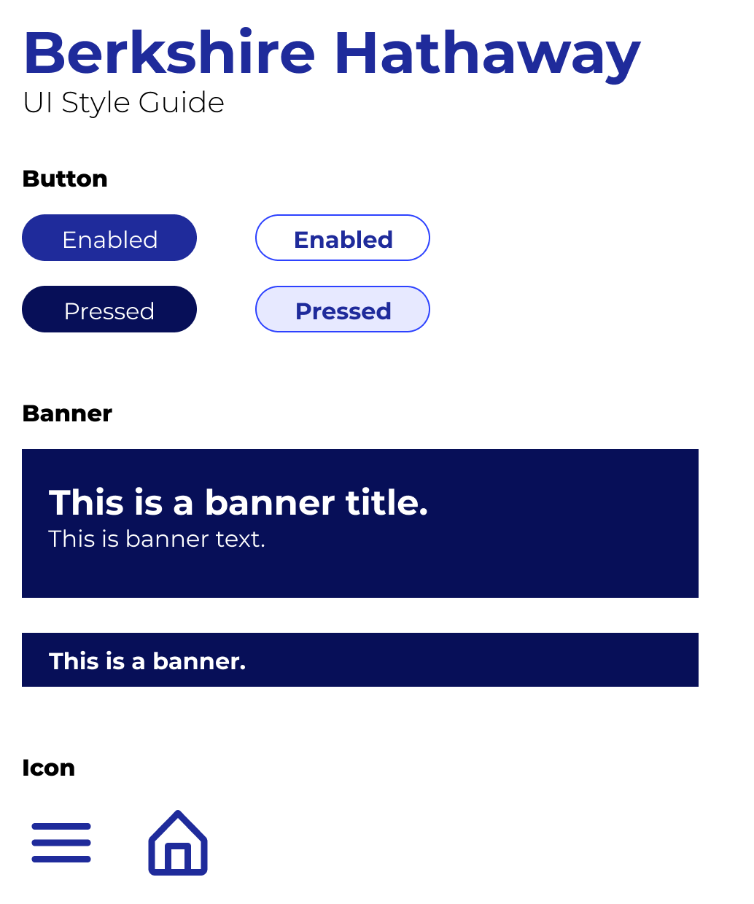

After seeing the official Berkshire Hathaway website, I knew it needed a redesign.
The original website can be found here. My redesign of the website can be
found here.
The official Berkshire Hathaway website, which can be found here is extremely bare bones. When trying to navigate the site, I had trouble finding any logical flow or organization to the way the content was laid out.
There were not too many errors and mistakes found on this website. I believe this is due to the extremely bare status of the site, where there are enough structural elements for many mistakes to have been made. The main error that was found was that the language was not defined in the code. Additionally, there was a redundant link, meaning that two of the links linked to the same page. There were also links to PDF documents, which can decrease the accessibility of the site since PDF documents sometimes need a separate application in order to be read. Finally, there were some areas on the website where the text was too small making it difficult to read.
Before creating the redesigned webpage, it was important for me to create some low fidelity wireframes of what I intended for the page. This way, I would have some guiding design principles for all the different devices I was designing for. These wireframes helped map out the basic elements of the page. They can be found below:
After creating the low fidelity wireframes, I needed to create more realistic high fidelity prototypes. For these, I would need a better idea of the color palette I would be drawing from to unify my webpage. For this purpose, I created a UI Style Guide, which can be found below:
Finally, I created the high fidelity prototypes for the redesigned webpage. These prototypes are the true guide that I used for creating the real redesign for the website, as they are much higher quality than the lo-fi wireframes, and they are annotated with notes about how to design certain elements to achieve a specific look. I created three prototypes, one for a computer monitor, one for a tablet, and one for a phone. The hi-fi prototypes can be found below:
With the guide of the hi-fi prototypes, I was able to complete the final redesign of the webpage. The redesign can be found here. Screenshots of it can be found below: